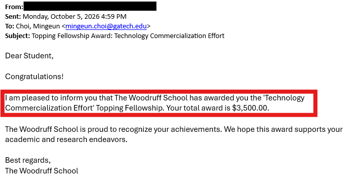

Mingeun receives the Technology Commercialization Effort Topping Fellowship (William H. Glenn, Sr. Fellowship)
The George W. Woodruff School of Mechanical Engineering awarded Mingeun Choi the Technology Commercialization Effort Topping Fellowship. The fellowship recognizes Ph.D. students who have led or substantially contributed to technology commercialization efforts related to their doctoral research at Georgia Tech. The $3,500 award is funded through the William H. Glenn, Sr. Fellowship.
Read More